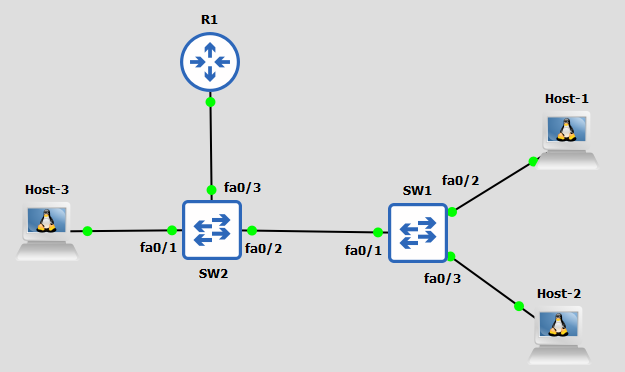

A
B
C
D
Představte si, že jste síťař a zabezpečujete jeden podnik, ve kterém jsou stolní počítače, jež jsou pomocí síťového kabelu připojeny ke switchi. Vašim cílem je nastavit to, že při přepojení síťového kabelu do jiného zařízení se daný interface vypne.
Pomocí čeho byste toho dosáhli?
Jestliže jste měli na mysli port security, tak máte pravdu!
Port Security je jedno z nastavení na switchi, které nám dokáže limitovat MAC adresy na port. Pokud se stane, že se k portu s nastevenou port security připojí zařízení s nepovolenou MAC adresou nebo vícero zařízení než je povoleno, je port standardně vypnut.
Na to, jak se port security zachová po tom, co se připojí zařízení s nepovolenou MAC adresou, má vliv mód port security.
Port Security má celkově 3 módy:
Před nastavením port security je nutné si ověřit, zda na portu není zapnuté DTP (dynamic auto, dynamic desirable).
To zjistíme například pomocí příkazu:
Switch#show interfaces switchport {port}
Pokud je tedy administrative mode nastavený na "static access" nebo "trunk", tak je vše v pořádku a můžeme nakonfigurovat port security.
Port security zapneme tak, že se přepneme na vybraný interface a napíšeme příkaz -
Switch(config-if)#switchport port-security
Konfigurací tohoto příkazu jsme tak aktivovali port security se standardním nastavením (1 dynamicky naučená MAC adresa, shutdown mód).
U port security můžeme dále změnit -
Mód port security specifikujeme pomocí příkazu:
Switch(config-if)#switchport port-security violation {shutdown | restrict | protect}
Počet povolených MAC adres na portu upravíme použitím příkazu:
Switch(config-if)#switchport port-security maximum {1-132}
Upravit způsob přidání MAC adres můžeme nakonfigurovat pomocí příkazu:
Switch(config-if)#switchport port-security mac-address {MAC adresa | sticky}
Pokud není nějak zvlášť nastaveno, jsou mac adresy přiřazeny k portu dynamicky. Pakliže chceme, aby dynamická MAC adresa zůstala přiřazená k portu i po restartu switche, tak nakonfigurujeme sticky možnost.
Expiraci MAC adres nakonfigurujeme použitím příkazu:
Switch(config-if)#switchport port-security aging time {*1-1440}
*čas se zde určuje v minutách!
Jestliže máme nakonfigurovaný shutdown mód a připojí se na něj zařízení s nepovolenou MAC adresou, tak se port vypne (errdisabled stav). Jak ho ale zpátky nahodíme?
Nejdříve je nutné to zařízení s nepovolenou MAC adresou odpojit.
Nyní si představíme 2 způsoby, jak interface nahodit -
1. je manuální nahození, kdy daný port vypneme a zapneme:
*Dec 14 10:31:40.524: %PORT_SECURITY-2-PSECURE_VIOLATION: Security violation occurred, caused by MAC address 4a0e.c58e.592a on port GigabitEthernet0/0. *Dec 14 10:31:42.524: %LINK-3-UPDOWN: Interface GigabitEthernet0/0, changed state to down Switch(config-if)#shutdown Switch(config-if)#no shutdown *Dec 14 10:32:16.061: %LINEPROTO-5-UPDOWN: Line protocol on Interface GigabitEthernet0/0, changed state to up
Tím druhým způsobem je automatické nahození portu po nějakém čase:
Switch(config)#errdisable recovery cause psecure-violation
Switch(config)#errdisable recovery interval {30-86400}
Přičemž prvním příkazem říkáme, že chceme povolit znovuzapnutí portu, pokud byla chyba na portu způsobená port security. Tím druhým pak už jen měníme interval.
Druhý způsob nelze nakonfigurovat v Packet Traceru!
Zadání: Nakonfiguruj port security na SW2 interfacích fa0/1, fa0/2, fa0/3.
Parametry port security na fa0/1:
Parametry na fa0/2:
Parametry na fa0/3:
Předtím než začneme konfigurovat port security na jednotlivých portech si zkontrolujeme zda jsou všechny porty určené staticky:
SW2#show interfaces switchport
Nyní se vrhneme na konfiguraci parametrů na jednotlivých interfacích, až poté zapneme port security.
Konfigurace port security na interfacu fa0/1:
SW2(config)#interface fa0/1 SW2(config-if)#switchport port-security mac-address sticky SW2(config-if)#exit SW2(config)#errdisable recovery cause psecure-violation SW2(config)#errdisable recovery interval 300 SW2(config)#interface fa0/1 SW2(config)#switchport port-security
Konfigurace port security na interfacu fa0/2:
SW2(config-if)#interface fa0/2 SW2(config-if)#switchport port-security max 10 SW2(config-if)#switchport port-security aging time 1440 SW2(config-if)#switchport port-security violation restrict SW2(config-of)#switchport port-security
Konfigurace port security na interfacu fa0/3:
SW2(config-if)#interface fa0/3 SW2(config-if)#switchport port-security mac-address 5a0e.c64e.592b SW2(config-if)#switchport port-security violation restrict SW2(config-if)switchport port-security
Nyní když máme nakonfigurováno, pojďme si pomocí následujicích příkazu ověřit, že je konfigurace správná:
SW2#show port-security
Tento příkaz nám ukáže nastavení port security (počet možných MAC adres, mód, kolik MAC adres tam je nyní, a kolikrát již bylo k portu připojeno zařízení s neznámou MAC adresou).
Pro podrobnější výpis přímo z nastavení daného interfacu můžeme použít příkaz:
SW2#show port-security interface {interface}
Dále si ještě můžeme ověřit to, jaké MAC adresy jsou aktuálně povoleny a jak dlouho jim případně zbývá:
SW2#show port-security address
Ještě si také můžeme zkontrolovat, zda jsme správně zapnuli znovuzapnutí interfacu pomocí příkazu:
SW2#show errdisable recovery
To je z tedy ze základů konfigurace port security vše. Konfiguraci port security si sami můžete vyzkoušet zde.
| Příkazy | Popis | Mód |
|---|---|---|
| switchport port-security | Zapne na interfacu port security | Interface |
| switchport port-security mac-address {MAC_adresa | sticky} | Nastaví staticky MAC adresu nebo udělá z dynamické MAC adresy sticky MAC adresu | Interface |
| switchport port-security violation {shutdown | restrict | protect} | Přepne port security do daného módu | Interface |
| switchport port-security aging time {1-1440} | Nastaví pro dynamické MAC adresy expiraci, nastavováno v minutách | Interface |
| switchport port-security maximum {1-132} | Nastaví maximální počet MAC adres na port | Interface |
| errdisable recovery cause psecure-violation | Nastaví znovuzapnutí portu po tom, co je port vypnut díky port security | Global Config |
| errdisable recovery interval | Nastaví, za jak dlouho dojde k zapnutí interfacu po tom, co je port nestandardně vypnut | Global Config |
| show interfaces switchport | Ukáže, zda je port nastaven staticky | Priviledged EXEC |
| show port-security | Zobrazí základní informace o port security | Priviledged EXEC |
| show port-security interface {interface} | Zobrazí podrobný výpis o port security z interfacu | Priviledged EXEC |
| show port-security address | Zobrazí informace o povolených MAC adresách v rámci port security | Priviledged EXEC |
| show errdisable recovery | Zobrazí informaci o tom, zda se porty, vypnuté kvůli port security, zapnou po nějaké době automaticky | Priviledged EXEC |
Port security je jedno z nastavení na switchi, které nám umožňuje limitovat MAC adresy na portu. Pokud dojde k připojení zařízení s nepovolenou MAC adresou, tak standardně dojde k vypnutí portu. Avšak to je možné upravit pomocí konfigurace port security módu.
Port security má 3 módy - shutdown (standardní), restrict a protect. Shutdown vypne interface, restrict a protect jej nevypnou, ale znemožní zařízení s nepovolenou MAC adresou posílat jakýkoliv data přes port. Restrict a Protect se pak od sebe liší hlavně tím, že restrict upozorní uživatele pomocí logů, protect ne.
Kromě konfigurace módu můžeme na port security dále specifikovat například počet povolených MAC adres na port, MAC adresy a expiraci MAC adres.
Díky port security tak můžeme předcházet různým MAC Flooding či DHCP Starvation útokům a zlepšíme tím pádem celkovou bezpečnost sítě.
A
B
C
D